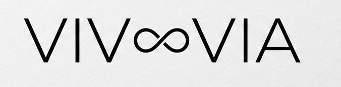
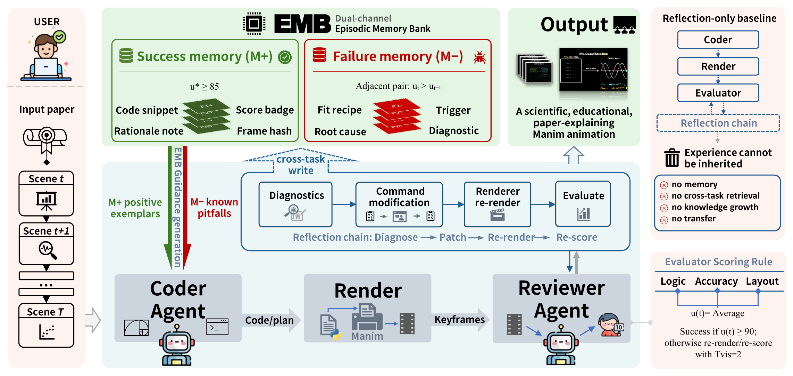
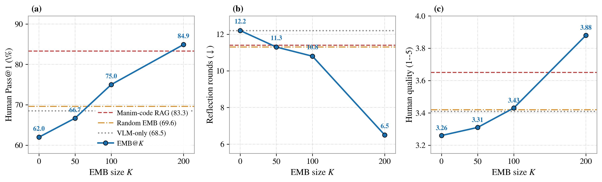
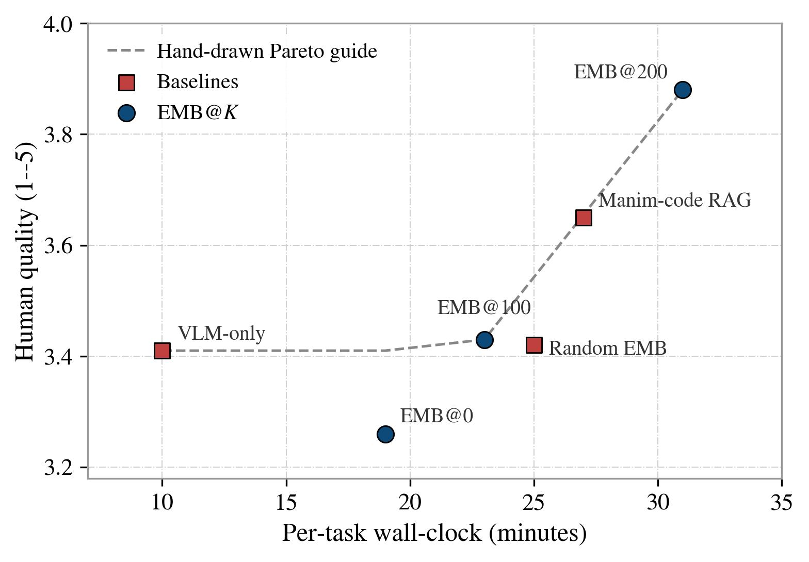
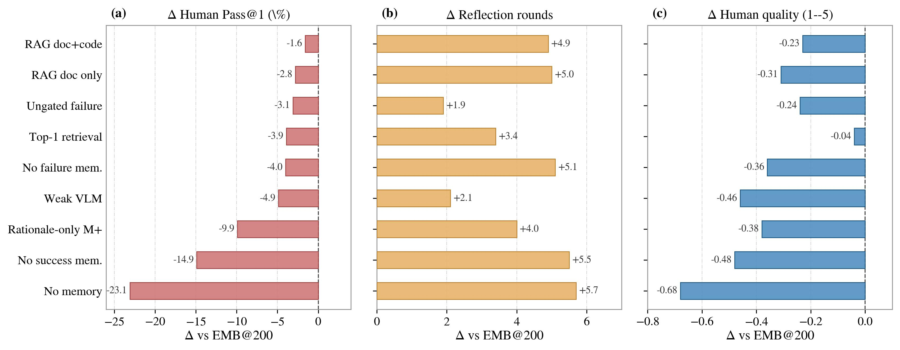
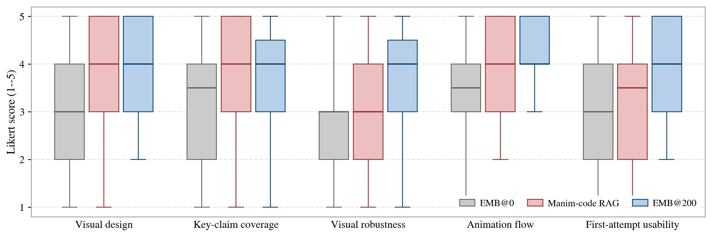
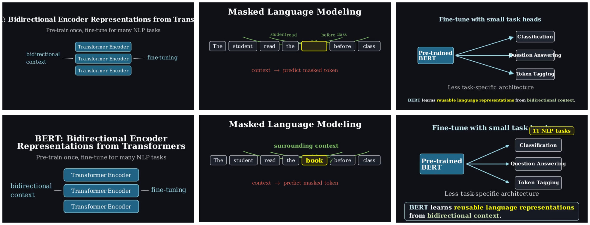
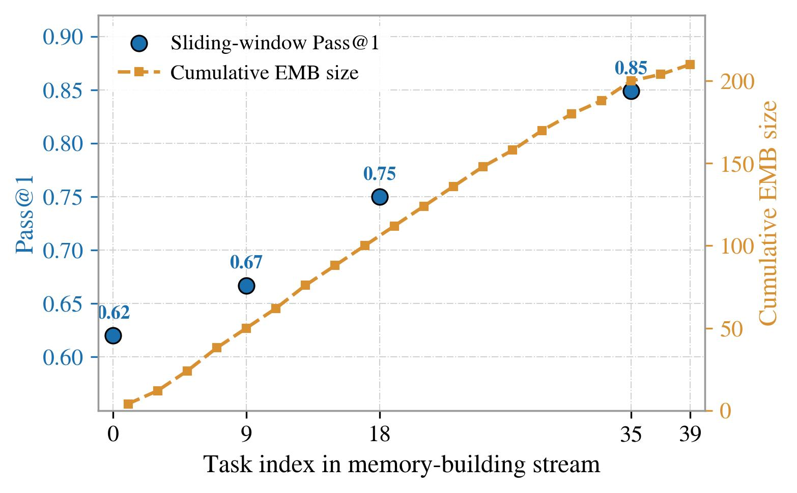

ManimAgent: Self-Evolving Multimodal Agents for Visual Education


Abstract
Multi-round reflection lets agents built on large language models recover from failures within a single task, but each task remains an isolated episode: lessons learned across many reflection rounds on one task are discarded before the next begins. We study this gap on a code-generation task: from a scientific paper section, the agent writes Python in the open-source Manim library to render a mathematical animation. We present ManimAgent, a self-evolving multimodal agent that carries reflection experience across tasks through a dual-channel Episodic Memory Bank grown entirely from its own task stream, with no weight updates and no human seeds.
After each animation converges, a vision–language model scores the rendered keyframes; the resulting signals populate a positive channel M+ that stores success rationales as soft Reference Examples, and a negative channel M− that stores validated failure patterns as hard Known Pitfalls. On a fixed-probe evaluation against no-memory, matched-budget retrieval-augmented generation, and shuffled-memory baselines, blind human Pass@1 rises and reflection rounds fall as memory size grows. We will release the code, frozen memory snapshots, and the task stream.
Key Contributions
Cross-task memory, no weight updates
A self-evolving multi-agent system narrows the inter-task gap with a VLM reward source and a dual-channel Episodic Memory Bank (EMB) — grown entirely from the agent's own task stream, with no human seeds and no fine-tuning.
Two complementary channels
Two LLM distillers turn each reflection trace into a free-form success rationale (M+, soft Reference Examples) and a structured failure lesson (M−, hard Known Pitfalls), each written only under explicit causal-attribution gates.
Fixed-probe evaluation
We release a JSON-indexed paper-section animation dataset with an output-level human-scoring protocol, and evaluate on frozen EMB snapshots in read-only mode — isolating cross-task memory from task-order and test-time-learning effects.
Method

ManimAgent closes a VLM-guided repair loop with dual-channel cross-task memory. A Storyboarder, Coder, Renderer, text Reviewer, VLM Reviewer, and Visual Reviser form a standard reflection pipeline. For each scene the loop has three nested layers: a memory retrieve call, a text-reflection loop that repairs render crashes, and a visual-reflection loop that fixes renderable-but-weak output. The visual reviewer's score u(t) drives auto-pass and revision control, while the selected score u* and validated improvement transitions govern separate success- and failure-memory writes. The system reads from the EMB before generating and writes to it after converging.
Results

EMB@K scales monotonically and overtakes the strong static-RAG baseline by K=200. The solid blue curve tracks the frozen EMB snapshot at K ∈ {0, 50, 100, 200} on each of the three headline metrics; horizontal references are Manim-code RAG (dashed red), Random EMB (dash-dot orange), and VLM-only (dotted grey). For Human Pass@1 and quality the EMB curve crosses Manim-code RAG between K=100 and K=200; for reflection rounds the gap to RAG widens sharply at K=200 (6.5 vs. 11.4).
More Analysis

Cost–quality Pareto. EMB@200 trades ~4 extra minutes over Manim-code RAG for a +0.23 gain in human quality, sitting on the Pareto frontier.

Ablations. Removing M+ collapses Pass@1 and quality; removing M− preserves quality but inflates reflection rounds. The gated full EMB beats ungated and Top-1 variants.

Human Likert scores. EMB@200 improves across visual design, key-claim coverage, visual robustness, animation flow, and first-attempt usability.

Qualitative case study (BERT). Top: first renderable scenes with weak layout hierarchy. Bottom: final recorded frames after visual reflection — title, masked-LM, and fine-tuning scenes become clearer.

Online curve. Interpolated trend as the memory bank grows over the task stream.
BibTeX
@misc{jiang2026manimagentselfevolvingmultimodalagents,
title = {ManimAgent: Self-Evolving Multimodal Agents for Visual Education},
author = {Wenjia Jiang and Zongyuan Cai and Yuanhang Shao and Chenru Wang
and Boyan Han and Zhixue Song and Keyu Chen and Shengwei An
and Xu Yang and Zhou Yang},
year = {2026},
eprint = {2606.30296},
archivePrefix = {arXiv},
primaryClass = {cs.AI},
url = {https://arxiv.org/abs/2606.30296}
}